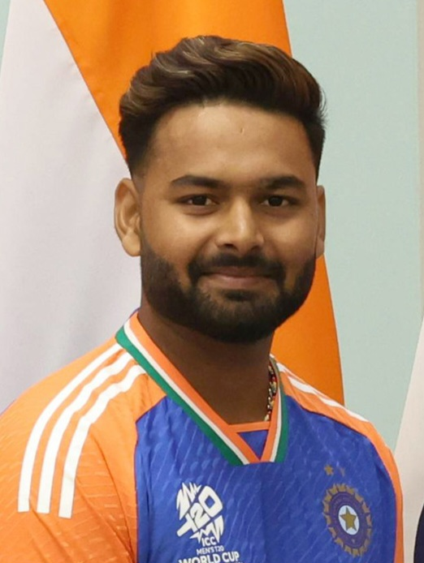

Indian Players
Shubman Gill
Shubman Gill is an Indian cricketer known for his elegant batting style and consistency at the top of the order. Born on September 8, 1999, in Punjab, he rose to fame as the Player of the Tournament in the 2018 ICC U-19 World Cup. He made his debut for the Indian national team in 2019 and has since become a key part of the squad across formats. Gill plays for Gujarat Titans in the IPL and is regarded as one of India's most promising young talents.

Sai Sudharsan
Sai Sudharsan is an Indian cricketer known for his elegant left-handed batting. Born on October 15, 2001, in Chennai, Tamil Nadu, he plays domestic cricket for Tamil Nadu and represents the Gujarat Titans in the Indian Premier League (IPL). Sudharsan gained recognition for his consistent performances in domestic tournaments and made headlines with his impressive knocks in the IPL, particularly for his calm temperament and solid technique under pressure. He is considered one of India’s promising young batting talents.

KL Rahul
KL Rahul is an Indian cricketer known for his stylish batting and versatility. Born on April 18, 1992, he plays as a top-order batter and occasional wicketkeeper. He has represented India in all formats and captains Lucknow Super Giants in the IPL.

Risabh Pant
Rishabh Pant is an Indian cricketer known for his aggressive batting and dynamic wicketkeeping. Born on October 4, 1997, in Roorkee, Uttarakhand, he plays for the Indian national team across formats and captains Delhi Capitals in the IPL. Pant is celebrated for his fearless stroke play and match-winning performances, especially in Test cricket.
M.S.Dhoni
MS Dhoni is a legendary Indian cricketer known for his calm leadership, sharp wicketkeeping, and powerful finishing with the bat. Born on July 7, 1981, in Ranchi, Jharkhand, he captained India to major victories, including the 2007 T20 World Cup, 2011 ODI World Cup, and 2013 Champions Trophy. He also led Chennai Super Kings to multiple IPL titles and is widely regarded as one of the greatest captains in cricket history.

Hardik Pandya
Hardik Pandya is an Indian cricketer known for his explosive batting, fast bowling, and all-round abilities. Born on October 11, 1993, in Surat, Gujarat, he plays a key role in India’s limited-overs teams and has also captained in the IPL. Hardik is known for his aggressive style, athleticism, and ability to change games with both bat and ball.
Surya Kumar Yadav
Suryakumar Yadav is an Indian cricketer known for his innovative and aggressive batting, especially in T20s. Born on September 14, 1990, in Mumbai, he is a right-handed middle-order batter. Suryakumar made his international debut in 2021 and quickly became a key player in India’s T20 side, earning praise for his 360-degree shot-making and consistency.
Ravi Ashwin
Ravichandran Ashwin is a seasoned Indian cricketer known for his intelligent off-spin bowling and handy batting skills. Born on September 17, 1986, in Chennai, Tamil Nadu, he is one of India’s most successful Test bowlers. Ashwin has numerous five-wicket hauls to his name and is known for his sharp cricketing mind, variations, and match-winning performances, especially in home conditions.

Ravindra Jadeja
Ravindra Jadeja is a star Indian all-rounder known for his explosive batting, accurate left-arm spin, and outstanding fielding. Born on December 6, 1988, in Rajkot, Gujarat, he plays a crucial role in all formats for India. Jadeja is celebrated for his match-winning performances, sharp cricketing instincts, and consistency as a complete package on the field.
Siraj
Mohammed Siraj is an Indian fast bowler known for his pace, aggression, and ability to swing the ball. Born on March 13, 1994, in Hyderabad, he rose from humble beginnings to become a key part of India’s pace attack, especially in Test cricket. Siraj is celebrated for his energy, consistency, and impactful performances in both international matches and the IPL.

Jasprit Bumrah
Jasprit Bumrah is a world-class Indian fast bowler known for his deadly yorkers, unique bowling action, and calm demeanor under pressure. Born on December 6, 1993, in Ahmedabad, Gujarat, he is a key player in all formats for India. Bumrah has earned a reputation as one of the best death-over specialists and match-winners in modern cricket.